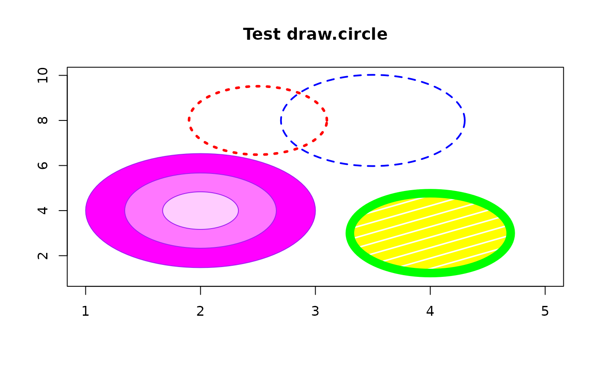

Draw a circle
draw.circle.RdDraws a circle on an existing plot.
Arguments
- x,y
Coordinates of the center of the circle.
- radius
Radius (or radii) of the circle(s) in user units.
- nv
Number of vertices to draw the circle.
- border
Color to use for drawing the circumference.
- col
Color to use for filling the circle.
- lty
Line type for the circumference.
- density
Density for patterned fill. See polygon.
- angle
Angle of patterned fill. See polygon.
- lwd
Line width for the circumference.
Value
A list with the x and y coordinates of the points on the circumference of the last circle displayed.
Details
draw.circle uses the dimensions of the plot and the x and y coordinates to draw a circle rather than an ellipse.
Examples
plot(1:5,seq(1,10,length=5),type="n",xlab="",ylab="",main="Test draw.circle")
draw.circle(2,4,c(1,0.66,0.33),border="purple",
col=c("#ff00ff","#ff77ff","#ffccff"),lty=1,lwd=1)
draw.circle(2.5,8,0.6,border="red",lty=3,lwd=3)
draw.circle(4,3,0.7,border="green",col="yellow",lty=1,
density=5,angle=30,lwd=10)
draw.circle(3.5,8,0.8,border="blue",lty=2,lwd=2)
